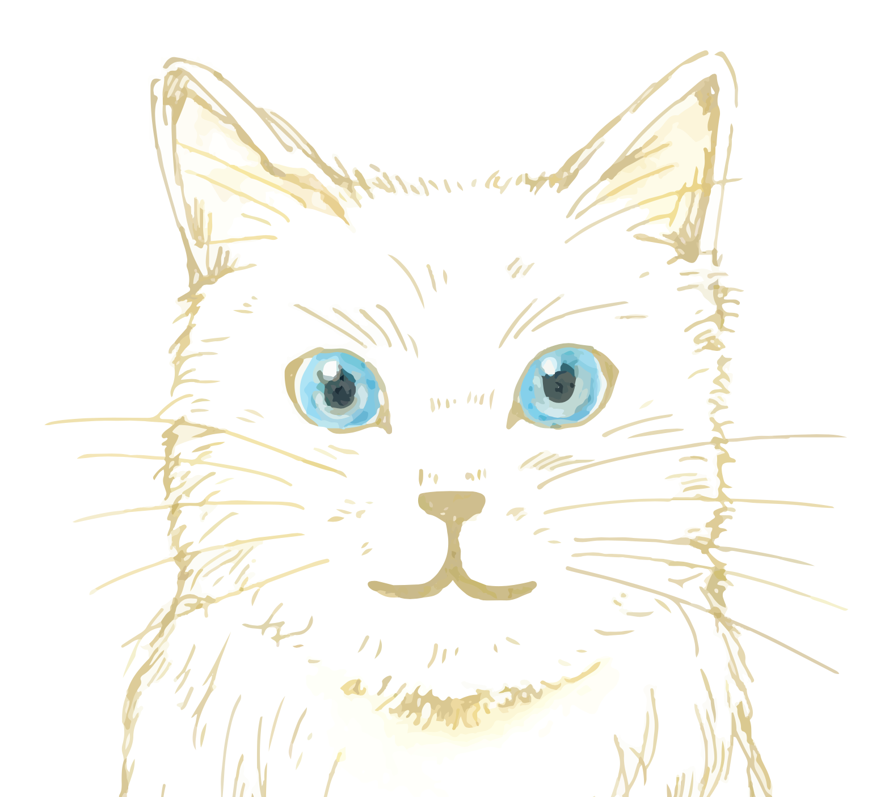

ノマドノマド
Explore the New Culture
About Me
千葉工業大学に学びにきた社会人です。無類の猫好きでもあります。
文化やクリエイティブ領域の活動を通じて、これまでになかったビジネスを展開し、豊かな世界を仲間と共に創造することに情熱を注いでいます。
My Perspective on AI
AIとは何か？
私にとってAIは、思考を拡張してくれるパートナーであり、同時に新しい文化を生み出すための「装置」だと捉えています。
AIとの向き合い方
単なる便利なツールとして使うのではなく、「人間とAIがどのような関係性を築くべきか」、その「あり方」自体に強い関心を持っています。これからの様々な体験を通じて、その関係性を学んでいきたいと考えています。
Future Exploration
これからは、国際コミュニケーションの分野において、最新の技術やトレンドをどのように活かすことができるのかを深く探求していきたいです。
現在のプロジェクト
🐾 nekomichi
猫好きのための招待制コミュニティマップ。エンジニアでない私がAIツールのみで構築・運営しています。京都左京区スタート。